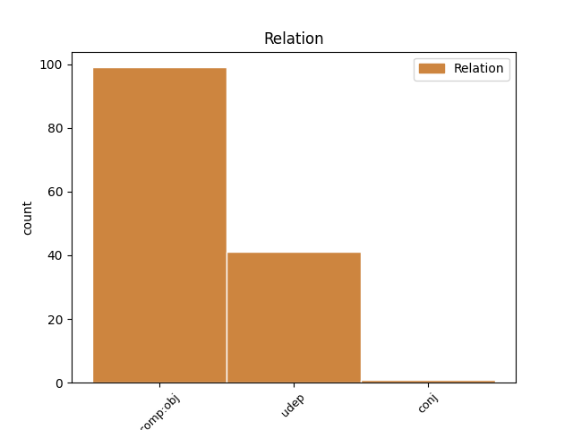
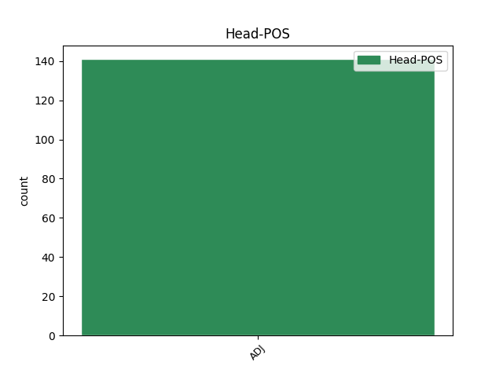
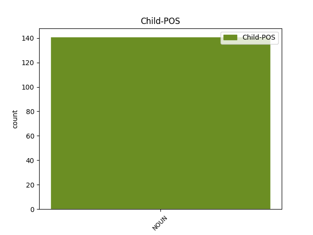

Distribution of features within this leaf



Agreement Rules sorted by frequency.
- When the dependent token is the direct object complements(comp:obj) of the head token, and the head token is ADJ and the dependent token is NOUN.
1 (8) _ _ _ _ 0 _ _ _
2 V _ _ _ _ 0 _ _ _
3 případech _ _ _ _ 0 _ _ _
4 , _ _ _ _ 0 _ _ _
5 kdy _ _ _ _ 0 _ _ _
6 to _ _ _ _ 0 _ _ _
7 vyžadují _ _ _ _ 0 _ _ _
8 právní _ _ _ _ 0 _ _ _
9 předpisy _ _ _ _ 0 _ _ _
10 , _ _ _ _ 0 _ _ _
11 mohou _ _ _ _ 0 _ _ _
12 účetní _ _ _ _ 0 _ _ _
13 jednotky _ _ _ _ 0 _ _ _
14 poskytnout _ _ _ _ 0 _ _ _
15 účetní _ _ _ _ 0 _ _ _
16 záznamy _ _ _ _ 0 _ _ _
17 nesoucí nesoucí ADJ AGIP4-----A---- Animacy=Inan|Aspect=Imp|Case=Acc|Gender=Masc|Number=Plur|Polarity=Pos|Tense=Pres|VerbForm=Part|Voice=Act 0 _ _ _
18 informace informace NOUN NNFP4-----A---- Case=Acc|Gender=Fem|Number=Plur|Polarity=Pos 17 comp:obj _ _
19 uspořádané _ _ _ _ 0 _ _ _
20 podle _ _ _ _ 0 _ _ _
21 oborů _ _ _ _ 0 _ _ _
22 ( _ _ _ _ 0 _ _ _
23 druhů _ _ _ _ 0 _ _ _
24 ) _ _ _ _ 0 _ _ _
25 činnosti _ _ _ _ 0 _ _ _
26 nebo _ _ _ _ 0 _ _ _
27 podle _ _ _ _ 0 _ _ _
28 zeměpisných _ _ _ _ 0 _ _ _
29 oblastí _ _ _ _ 0 _ _ _
30 , _ _ _ _ 0 _ _ _
31 ve _ _ _ _ 0 _ _ _
32 kterých _ _ _ _ 0 _ _ _
33 provozují _ _ _ _ 0 _ _ _
34 svou _ _ _ _ 0 _ _ _
35 činnost _ _ _ _ 0 _ _ _
36 . _ _ _ _ 0 _ _ _
1 (5) _ _ _ _ 0 _ _ _
2 Účetní _ _ _ _ 0 _ _ _
3 jednotky _ _ _ _ 0 _ _ _
4 , _ _ _ _ 0 _ _ _
5 které _ _ _ _ 0 _ _ _
6 nejsou _ _ _ _ 0 _ _ _
7 organizační _ _ _ _ 0 _ _ _
8 složkou _ _ _ _ 0 _ _ _
9 státu _ _ _ _ 0 _ _ _
10 , _ _ _ _ 0 _ _ _
11 územním _ _ _ _ 0 _ _ _
12 samosprávným _ _ _ _ 0 _ _ _
13 celkem _ _ _ _ 0 _ _ _
14 nebo _ _ _ _ 0 _ _ _
15 účetní _ _ _ _ 0 _ _ _
16 jednotkou _ _ _ _ 0 _ _ _
17 vzniklou vzniklý ADJ AAFS7----1A---- Case=Ins|Degree=Pos|Gender=Fem|Number=Sing|Polarity=Pos 0 _ _ _
18 nebo _ _ _ _ 0 _ _ _
19 zřízenou _ _ _ _ 0 _ _ _
20 zvláštním _ _ _ _ 0 _ _ _
21 zákonem zákon NOUN NNIS7-----A---- Animacy=Inan|Case=Ins|Gender=Masc|Number=Sing|Polarity=Pos 17 udep _ SpaceAfter=No
22 , _ _ _ _ 0 _ _ _
23 mohou _ _ _ _ 0 _ _ _
24 uplatnit _ _ _ _ 0 _ _ _
25 hospodářský _ _ _ _ 0 _ _ _
26 rok _ _ _ _ 0 _ _ _
27 . _ _ _ _ 0 _ _ _
1 Pokud _ _ _ _ 0 _ _ _
2 je _ _ _ _ 0 _ _ _
3 pořizování _ _ _ _ 0 _ _ _
4 majetku _ _ _ _ 0 _ _ _
5 zastaveno _ _ _ _ 0 _ _ _
6 trvale _ _ _ _ 0 _ _ _
7 , _ _ _ _ 0 _ _ _
8 odepíše _ _ _ _ 0 _ _ _
9 se _ _ _ _ 0 _ _ _
10 pořizovaný _ _ _ _ 0 _ _ _
11 majetek _ _ _ _ 0 _ _ _
12 při _ _ _ _ 0 _ _ _
13 jeho _ _ _ _ 0 _ _ _
14 vyřazení _ _ _ _ 0 _ _ _
15 do _ _ _ _ 0 _ _ _
16 nákladů _ _ _ _ 0 _ _ _
17 (1) _ _ _ _ 0 _ _ _
18 Součástí _ _ _ _ 0 _ _ _
19 ocenění _ _ _ _ 0 _ _ _
20 dlouhodobého _ _ _ _ 0 _ _ _
21 nehmotného _ _ _ _ 0 _ _ _
22 a _ _ _ _ 0 _ _ _
23 hmotného _ _ _ _ 0 _ _ _
24 majetku _ _ _ _ 0 _ _ _
25 a _ _ _ _ 0 _ _ _
26 technického _ _ _ _ 0 _ _ _
27 zhodnocení _ _ _ _ 0 _ _ _
28 s _ _ _ _ 0 _ _ _
29 ohledem _ _ _ _ 0 _ _ _
30 na _ _ _ _ 0 _ _ _
31 povahu _ _ _ _ 0 _ _ _
32 pořizovaného _ _ _ _ 0 _ _ _
33 majetku _ _ _ _ 0 _ _ _
34 a _ _ _ _ 0 _ _ _
35 způsob _ _ _ _ 0 _ _ _
36 jeho _ _ _ _ 0 _ _ _
37 pořízení _ _ _ _ 0 _ _ _
38 do _ _ _ _ 0 _ _ _
39 doby _ _ _ _ 0 _ _ _
40 stanovené _ _ _ _ 0 _ _ _
41 v _ _ _ _ 0 _ _ _
42 §_6_odst._8 _ _ _ _ 0 _ _ _
43 nebo _ _ _ _ 0 _ _ _
44 v _ _ _ _ 0 _ _ _
45 §_7_odst._11 _ _ _ _ 0 _ _ _
46 je _ _ _ _ 0 _ _ _
47 cena _ _ _ _ 0 _ _ _
48 , _ _ _ _ 0 _ _ _
49 za _ _ _ _ 0 _ _ _
50 kterou _ _ _ _ 0 _ _ _
51 byl _ _ _ _ 0 _ _ _
52 majetek _ _ _ _ 0 _ _ _
53 pořízen _ _ _ _ 0 _ _ _
54 a _ _ _ _ 0 _ _ _
55 zejména _ _ _ _ 0 _ _ _
56 náklady _ _ _ _ 0 _ _ _
57 na _ _ _ _ 0 _ _ _
58 a) _ _ _ _ 0 _ _ _
59 přípravu _ _ _ _ 0 _ _ _
60 a _ _ _ _ 0 _ _ _
61 zabezpečení _ _ _ _ 0 _ _ _
62 pořizovaného _ _ _ _ 0 _ _ _
63 majetku _ _ _ _ 0 _ _ _
64 , _ _ _ _ 0 _ _ _
65 zejména _ _ _ _ 0 _ _ _
66 odměny _ _ _ _ 0 _ _ _
67 za _ _ _ _ 0 _ _ _
68 poradenské _ _ _ _ 0 _ _ _
69 služby _ _ _ _ 0 _ _ _
70 a _ _ _ _ 0 _ _ _
71 zprostředkování _ _ _ _ 0 _ _ _
72 , _ _ _ _ 0 _ _ _
73 správní _ _ _ _ 0 _ _ _
74 poplatky _ _ _ _ 0 _ _ _
75 , _ _ _ _ 0 _ _ _
76 platby _ _ _ _ 0 _ _ _
77 za _ _ _ _ 0 _ _ _
78 poskytnuté _ _ _ _ 0 _ _ _
79 záruky _ _ _ _ 0 _ _ _
80 a _ _ _ _ 0 _ _ _
81 otevření _ _ _ _ 0 _ _ _
82 akreditivu _ _ _ _ 0 _ _ _
83 , _ _ _ _ 0 _ _ _
84 expertízy _ _ _ _ 0 _ _ _
85 , _ _ _ _ 0 _ _ _
86 patentové _ _ _ _ 0 _ _ _
87 rešerše _ _ _ _ 0 _ _ _
88 a _ _ _ _ 0 _ _ _
89 předprojektové _ _ _ _ 0 _ _ _
90 přípravné _ _ _ _ 0 _ _ _
91 práce _ _ _ _ 0 _ _ _
92 , _ _ _ _ 0 _ _ _
93 b) _ _ _ _ 0 _ _ _
94 úroky _ _ _ _ 0 _ _ _
95 , _ _ _ _ 0 _ _ _
96 zejména _ _ _ _ 0 _ _ _
97 z _ _ _ _ 0 _ _ _
98 úvěru _ _ _ _ 0 _ _ _
99 , _ _ _ _ 0 _ _ _
100 pokud _ _ _ _ 0 _ _ _
101 tak _ _ _ _ 0 _ _ _
102 účetní _ _ _ _ 0 _ _ _
103 jednotka _ _ _ _ 0 _ _ _
104 rozhodne _ _ _ _ 0 _ _ _
105 , _ _ _ _ 0 _ _ _
106 c) _ _ _ _ 0 _ _ _
107 odvody _ _ _ _ 0 _ _ _
108 za _ _ _ _ 0 _ _ _
109 dočasné _ _ _ _ 0 _ _ _
110 nebo _ _ _ _ 0 _ _ _
111 trvalé _ _ _ _ 0 _ _ _
112 odnětí _ _ _ _ 0 _ _ _
113 zemědělské _ _ _ _ 0 _ _ _
114 půdy _ _ _ _ 0 _ _ _
115 zemědělské _ _ _ _ 0 _ _ _
116 výrobě _ _ _ _ 0 _ _ _
117 a _ _ _ _ 0 _ _ _
118 poplatky _ _ _ _ 0 _ _ _
119 za _ _ _ _ 0 _ _ _
120 dočasné _ _ _ _ 0 _ _ _
121 nebo _ _ _ _ 0 _ _ _
122 trvalé _ _ _ _ 0 _ _ _
123 odnětí _ _ _ _ 0 _ _ _
124 lesní _ _ _ _ 0 _ _ _
125 půdy _ _ _ _ 0 _ _ _
126 , _ _ _ _ 0 _ _ _
127 d) _ _ _ _ 0 _ _ _
128 průzkumné _ _ _ _ 0 _ _ _
129 , _ _ _ _ 0 _ _ _
130 geologické _ _ _ _ 0 _ _ _
131 , _ _ _ _ 0 _ _ _
132 geodetické _ _ _ _ 0 _ _ _
133 a _ _ _ _ 0 _ _ _
134 projektové _ _ _ _ 0 _ _ _
135 práce _ _ _ _ 0 _ _ _
136 včetně _ _ _ _ 0 _ _ _
137 variantních _ _ _ _ 0 _ _ _
138 řešení _ _ _ _ 0 _ _ _
139 a _ _ _ _ 0 _ _ _
140 rozpočtu _ _ _ _ 0 _ _ _
141 , _ _ _ _ 0 _ _ _
142 zařízení _ _ _ _ 0 _ _ _
143 staveniště _ _ _ _ 0 _ _ _
144 , _ _ _ _ 0 _ _ _
145 odstranění _ _ _ _ 0 _ _ _
146 porostu _ _ _ _ 0 _ _ _
147 a _ _ _ _ 0 _ _ _
148 příslušné _ _ _ _ 0 _ _ _
149 terénní _ _ _ _ 0 _ _ _
150 úpravy _ _ _ _ 0 _ _ _
151 , _ _ _ _ 0 _ _ _
152 clo _ _ _ _ 0 _ _ _
153 , _ _ _ _ 0 _ _ _
154 dopravné _ _ _ _ 0 _ _ _
155 , _ _ _ _ 0 _ _ _
156 montáž _ _ _ _ 0 _ _ _
157 a _ _ _ _ 0 _ _ _
158 umělecká _ _ _ _ 0 _ _ _
159 díla _ _ _ _ 0 _ _ _
160 tvořící _ _ _ _ 0 _ _ _
161 součást _ _ _ _ 0 _ _ _
162 stavby _ _ _ _ 0 _ _ _
163 , _ _ _ _ 0 _ _ _
164 e) _ _ _ _ 0 _ _ _
165 licence _ _ _ _ 0 _ _ _
166 , _ _ _ _ 0 _ _ _
167 patenty _ _ _ _ 0 _ _ _
168 a _ _ _ _ 0 _ _ _
169 jiná _ _ _ _ 0 _ _ _
170 práva _ _ _ _ 0 _ _ _
171 využitá _ _ _ _ 0 _ _ _
172 při _ _ _ _ 0 _ _ _
173 pořizování _ _ _ _ 0 _ _ _
174 majetku _ _ _ _ 0 _ _ _
175 , _ _ _ _ 0 _ _ _
176 nikoliv _ _ _ _ 0 _ _ _
177 pro _ _ _ _ 0 _ _ _
178 budoucí _ _ _ _ 0 _ _ _
179 provoz _ _ _ _ 0 _ _ _
180 , _ _ _ _ 0 _ _ _
181 f) _ _ _ _ 0 _ _ _
182 vyřazení _ _ _ _ 0 _ _ _
183 stávajících _ _ _ _ 0 _ _ _
184 staveb _ _ _ _ 0 _ _ _
185 nebo _ _ _ _ 0 _ _ _
186 jejich _ _ _ _ 0 _ _ _
187 částí _ _ _ _ 0 _ _ _
188 v _ _ _ _ 0 _ _ _
189 důsledku _ _ _ _ 0 _ _ _
190 nové _ _ _ _ 0 _ _ _
191 výstavby _ _ _ _ 0 _ _ _
192 . _ _ _ _ 0 _ _ _
193 Zůstatkové _ _ _ _ 0 _ _ _
194 ceny _ _ _ _ 0 _ _ _
195 vyřazených _ _ _ _ 0 _ _ _
196 staveb _ _ _ _ 0 _ _ _
197 nebo _ _ _ _ 0 _ _ _
198 jejich _ _ _ _ 0 _ _ _
199 částí _ _ _ _ 0 _ _ _
200 a _ _ _ _ 0 _ _ _
201 náklady _ _ _ _ 0 _ _ _
202 na _ _ _ _ 0 _ _ _
203 vyřazení _ _ _ _ 0 _ _ _
204 tvoří _ _ _ _ 0 _ _ _
205 součást _ _ _ _ 0 _ _ _
206 nákladů _ _ _ _ 0 _ _ _
207 na _ _ _ _ 0 _ _ _
208 novou _ _ _ _ 0 _ _ _
209 výstavbu _ _ _ _ 0 _ _ _
210 , _ _ _ _ 0 _ _ _
211 g) _ _ _ _ 0 _ _ _
212 náhrady _ _ _ _ 0 _ _ _
213 za _ _ _ _ 0 _ _ _
214 omezení _ _ _ _ 0 _ _ _
215 vlastnických _ _ _ _ 0 _ _ _
216 práv _ _ _ _ 0 _ _ _
217 , _ _ _ _ 0 _ _ _
218 náhrady _ _ _ _ 0 _ _ _
219 majetkové _ _ _ _ 0 _ _ _
220 újmy _ _ _ _ 0 _ _ _
221 vlastníkovi vlastníkův ADJ AUMP1M--------- Animacy=Anim|Case=Nom|Gender=Masc|Gender[psor]=Masc|Number=Plur|Poss=Yes 0 _ _ _
222 nebo _ _ _ _ 0 _ _ _
223 nájemci nájemce NOUN NNMP1-----A---- Animacy=Anim|Case=Nom|Gender=Masc|Number=Plur|Polarity=Pos 221 conj _ _
224 nemovitosti _ _ _ _ 0 _ _ _
225 nebo _ _ _ _ 0 _ _ _
226 za _ _ _ _ 0 _ _ _
227 omezení _ _ _ _ 0 _ _ _
228 v _ _ _ _ 0 _ _ _
229 obvyklém _ _ _ _ 0 _ _ _
230 užívání _ _ _ _ 0 _ _ _
231 , _ _ _ _ 0 _ _ _
232 jakož _ _ _ _ 0 _ _ _
233 i _ _ _ _ 0 _ _ _
234 náhrady _ _ _ _ 0 _ _ _
235 za _ _ _ _ 0 _ _ _
236 předčasně _ _ _ _ 0 _ _ _
237 smýcený _ _ _ _ 0 _ _ _
238 porost _ _ _ _ 0 _ _ _
239 v _ _ _ _ 0 _ _ _
240 souvislosti _ _ _ _ 0 _ _ _
241 s _ _ _ _ 0 _ _ _
242 výstavbou _ _ _ _ 0 _ _ _
243 , _ _ _ _ 0 _ _ _
244 h) _ _ _ _ 0 _ _ _
245 úhradu _ _ _ _ 0 _ _ _
246 podílu _ _ _ _ 0 _ _ _
247 na _ _ _ _ 0 _ _ _
248 1 _ _ _ _ 0 _ _ _
249 . _ _ _ _ 0 _ _ _
250 oprávněných _ _ _ _ 0 _ _ _
251 nákladech _ _ _ _ 0 _ _ _
252 provozovatele _ _ _ _ 0 _ _ _
253 přenosové _ _ _ _ 0 _ _ _
254 soustavy _ _ _ _ 0 _ _ _
255 nebo _ _ _ _ 0 _ _ _
256 příslušného _ _ _ _ 0 _ _ _
257 provozovatele _ _ _ _ 0 _ _ _
258 distribuční _ _ _ _ 0 _ _ _
259 soustavy _ _ _ _ 0 _ _ _
260 spojených _ _ _ _ 0 _ _ _
261 s _ _ _ _ 0 _ _ _
262 připojením _ _ _ _ 0 _ _ _
263 a _ _ _ _ 0 _ _ _
264 zajištěním _ _ _ _ 0 _ _ _
265 požadovaného _ _ _ _ 0 _ _ _
266 příkonu _ _ _ _ 0 _ _ _
267 , _ _ _ _ 0 _ _ _
268 2 _ _ _ _ 0 _ _ _
269 . _ _ _ _ 0 _ _ _
270 účelně _ _ _ _ 0 _ _ _
271 vynaložených _ _ _ _ 0 _ _ _
272 nákladech _ _ _ _ 0 _ _ _
273 provozovatele _ _ _ _ 0 _ _ _
274 distribuční _ _ _ _ 0 _ _ _
275 soustavy _ _ _ _ 0 _ _ _
276 spojených _ _ _ _ 0 _ _ _
277 s _ _ _ _ 0 _ _ _
278 připojením _ _ _ _ 0 _ _ _
279 a _ _ _ _ 0 _ _ _
280 se _ _ _ _ 0 _ _ _
281 zajištěním _ _ _ _ 0 _ _ _
282 požadované _ _ _ _ 0 _ _ _
283 dodávky _ _ _ _ 0 _ _ _
284 plynu _ _ _ _ 0 _ _ _
285 , _ _ _ _ 0 _ _ _
286 3 _ _ _ _ 0 _ _ _
287 . _ _ _ _ 0 _ _ _
288 účelně _ _ _ _ 0 _ _ _
289 vynaložených _ _ _ _ 0 _ _ _
290 nákladech _ _ _ _ 0 _ _ _
291 dodavatele _ _ _ _ 0 _ _ _
292 spojených _ _ _ _ 0 _ _ _
293 s _ _ _ _ 0 _ _ _
294 připojením _ _ _ _ 0 _ _ _
295 a _ _ _ _ 0 _ _ _
296 se _ _ _ _ 0 _ _ _
297 zajištěním _ _ _ _ 0 _ _ _
298 dodávky _ _ _ _ 0 _ _ _
299 tepelné _ _ _ _ 0 _ _ _
300 energie _ _ _ _ 0 _ _ _
301 , _ _ _ _ 0 _ _ _
302 i) _ _ _ _ 0 _ _ _
303 úhrady _ _ _ _ 0 _ _ _
304 nákladů _ _ _ _ 0 _ _ _
305 za _ _ _ _ 0 _ _ _
306 přeložky _ _ _ _ 0 _ _ _
307 , _ _ _ _ 0 _ _ _
308 překládky _ _ _ _ 0 _ _ _
309 a _ _ _ _ 0 _ _ _
310 náhradní _ _ _ _ 0 _ _ _
311 pozemní _ _ _ _ 0 _ _ _
312 komunikaci _ _ _ _ 0 _ _ _
313 účetní _ _ _ _ 0 _ _ _
314 jednotce _ _ _ _ 0 _ _ _
315 , _ _ _ _ 0 _ _ _
316 která _ _ _ _ 0 _ _ _
317 má _ _ _ _ 0 _ _ _
318 vlastnické _ _ _ _ 0 _ _ _
319 právo _ _ _ _ 0 _ _ _
320 k _ _ _ _ 0 _ _ _
321 dotčenému _ _ _ _ 0 _ _ _
322 majetku _ _ _ _ 0 _ _ _
323 , _ _ _ _ 0 _ _ _
324 anebo _ _ _ _ 0 _ _ _
325 která _ _ _ _ 0 _ _ _
326 hospodaří _ _ _ _ 0 _ _ _
327 s _ _ _ _ 0 _ _ _
328 majetkem _ _ _ _ 0 _ _ _
329 státu _ _ _ _ 0 _ _ _
330 nebo _ _ _ _ 0 _ _ _
331 s _ _ _ _ 0 _ _ _
332 majetkem _ _ _ _ 0 _ _ _
333 územních _ _ _ _ 0 _ _ _
334 samosprávných _ _ _ _ 0 _ _ _
335 celků _ _ _ _ 0 _ _ _
336 , _ _ _ _ 0 _ _ _
337 j) _ _ _ _ 0 _ _ _
338 zkoušky _ _ _ _ 0 _ _ _
339 před _ _ _ _ 0 _ _ _
340 uvedením _ _ _ _ 0 _ _ _
341 majetku _ _ _ _ 0 _ _ _
342 do _ _ _ _ 0 _ _ _
343 stavu _ _ _ _ 0 _ _ _
344 způsobilého _ _ _ _ 0 _ _ _
345 k _ _ _ _ 0 _ _ _
346 užívání _ _ _ _ 0 _ _ _
347 . _ _ _ _ 0 _ _ _
348 Vzniknou-li _ _ _ _ 0 _ _ _
349 při _ _ _ _ 0 _ _ _
350 zkouškách _ _ _ _ 0 _ _ _
351 použitelné _ _ _ _ 0 _ _ _
352 výrobky _ _ _ _ 0 _ _ _
353 nebo _ _ _ _ 0 _ _ _
354 výkony _ _ _ _ 0 _ _ _
355 , _ _ _ _ 0 _ _ _
356 jsou _ _ _ _ 0 _ _ _
357 výnosy _ _ _ _ 0 _ _ _
358 z _ _ _ _ 0 _ _ _
359 těchto _ _ _ _ 0 _ _ _
360 výrobků _ _ _ _ 0 _ _ _
361 nebo _ _ _ _ 0 _ _ _
362 výkonů _ _ _ _ 0 _ _ _
363 součástí _ _ _ _ 0 _ _ _
364 provozních _ _ _ _ 0 _ _ _
365 výnosů _ _ _ _ 0 _ _ _
366 a _ _ _ _ 0 _ _ _
367 náklady _ _ _ _ 0 _ _ _
368 na _ _ _ _ 0 _ _ _
369 ně _ _ _ _ 0 _ _ _
370 ( _ _ _ _ 0 _ _ _
371 bez _ _ _ _ 0 _ _ _
372 odpisů _ _ _ _ 0 _ _ _
373 ) _ _ _ _ 0 _ _ _
374 součástí _ _ _ _ 0 _ _ _
375 provozních _ _ _ _ 0 _ _ _
376 nákladů _ _ _ _ 0 _ _ _
377 . _ _ _ _ 0 _ _ _
378 Zkouškami _ _ _ _ 0 _ _ _
379 nejsou _ _ _ _ 0 _ _ _
380 záběh _ _ _ _ 0 _ _ _
381 a _ _ _ _ 0 _ _ _
382 osvojení _ _ _ _ 0 _ _ _
383 , _ _ _ _ 0 _ _ _
384 které _ _ _ _ 0 _ _ _
385 jako _ _ _ _ 0 _ _ _
386 počáteční _ _ _ _ 0 _ _ _
387 vícenáklady _ _ _ _ 0 _ _ _
388 zahajované _ _ _ _ 0 _ _ _
389 výroby _ _ _ _ 0 _ _ _
390 jsou _ _ _ _ 0 _ _ _
391 součástí _ _ _ _ 0 _ _ _
392 nákladů _ _ _ _ 0 _ _ _
393 po _ _ _ _ 0 _ _ _
394 uvedení _ _ _ _ 0 _ _ _
395 majetku _ _ _ _ 0 _ _ _
396 do _ _ _ _ 0 _ _ _
397 stavu _ _ _ _ 0 _ _ _
398 způsobilého _ _ _ _ 0 _ _ _
399 k _ _ _ _ 0 _ _ _
400 užívání _ _ _ _ 0 _ _ _
401 , _ _ _ _ 0 _ _ _
402 k) _ _ _ _ 0 _ _ _
403 zabezpečovací _ _ _ _ 0 _ _ _
404 , _ _ _ _ 0 _ _ _
405 konzervační _ _ _ _ 0 _ _ _
406 a _ _ _ _ 0 _ _ _
407 udržovací _ _ _ _ 0 _ _ _
408 práce _ _ _ _ 0 _ _ _
409 při _ _ _ _ 0 _ _ _
410 zastavení _ _ _ _ 0 _ _ _
411 pořizování _ _ _ _ 0 _ _ _
412 majetku _ _ _ _ 0 _ _ _
413 a _ _ _ _ 0 _ _ _
414 dekonzervační _ _ _ _ 0 _ _ _
415 práce _ _ _ _ 0 _ _ _
416 v _ _ _ _ 0 _ _ _
417 případě _ _ _ _ 0 _ _ _
418 dalšího _ _ _ _ 0 _ _ _
419 pokračování _ _ _ _ 0 _ _ _
420 . _ _ _ _ 0 _ _ _
421 . _ _ _ _ 0 _ _ _
Disagree Examples:
1 Tato _ _ _ _ 0 _ _ _
2 vyhláška _ _ _ _ 0 _ _ _
3 zapracovávqá _ _ _ _ 0 _ _ _
4 příslušné _ _ _ _ 0 _ _ _
5 předpisy _ _ _ _ 0 _ _ _
6 Evropské _ _ _ _ 0 _ _ _
7 unie _ _ _ _ 0 _ _ _
8 a _ _ _ _ 0 _ _ _
9 upravuje _ _ _ _ 0 _ _ _
10 : _ _ _ _ 0 _ _ _
11 a) _ _ _ _ 0 _ _ _
12 rozsah _ _ _ _ 0 _ _ _
13 a _ _ _ _ 0 _ _ _
14 způsob _ _ _ _ 0 _ _ _
15 sestavování _ _ _ _ 0 _ _ _
16 účetní _ _ _ _ 0 _ _ _
17 závěrky _ _ _ _ 0 _ _ _
18 ; _ _ _ _ 0 _ _ _
19 uspořádání _ _ _ _ 0 _ _ _
20 , _ _ _ _ 0 _ _ _
21 označování _ _ _ _ 0 _ _ _
22 a _ _ _ _ 0 _ _ _
23 obsahové _ _ _ _ 0 _ _ _
24 vymezení _ _ _ _ 0 _ _ _
25 položek _ _ _ _ 0 _ _ _
26 majetku _ _ _ _ 0 _ _ _
27 a _ _ _ _ 0 _ _ _
28 jiných _ _ _ _ 0 _ _ _
29 aktiv _ _ _ _ 0 _ _ _
30 , _ _ _ _ 0 _ _ _
31 závazků _ _ _ _ 0 _ _ _
32 a _ _ _ _ 0 _ _ _
33 jiných _ _ _ _ 0 _ _ _
34 pasiv _ _ _ _ 0 _ _ _
35 v _ _ _ _ 0 _ _ _
36 účetní _ _ _ _ 0 _ _ _
37 závěrce _ _ _ _ 0 _ _ _
38 ; _ _ _ _ 0 _ _ _
39 uspořádání _ _ _ _ 0 _ _ _
40 , _ _ _ _ 0 _ _ _
41 označování _ _ _ _ 0 _ _ _
42 a _ _ _ _ 0 _ _ _
43 obsahové _ _ _ _ 0 _ _ _
44 vymezení _ _ _ _ 0 _ _ _
45 nákladů _ _ _ _ 0 _ _ _
46 , _ _ _ _ 0 _ _ _
47 výnosů _ _ _ _ 0 _ _ _
48 a _ _ _ _ 0 _ _ _
49 výsledků _ _ _ _ 0 _ _ _
50 hospodaření _ _ _ _ 0 _ _ _
51 v _ _ _ _ 0 _ _ _
52 účetní _ _ _ _ 0 _ _ _
53 závěrce _ _ _ _ 0 _ _ _
54 ; _ _ _ _ 0 _ _ _
55 uspořádání _ _ _ _ 0 _ _ _
56 a _ _ _ _ 0 _ _ _
57 obsahové _ _ _ _ 0 _ _ _
58 vymezení _ _ _ _ 0 _ _ _
59 vysvětlujících _ _ _ _ 0 _ _ _
60 a _ _ _ _ 0 _ _ _
61 doplňujících _ _ _ _ 0 _ _ _
62 informací _ _ _ _ 0 _ _ _
63 v _ _ _ _ 0 _ _ _
64 příloze _ _ _ _ 0 _ _ _
65 v _ _ _ _ 0 _ _ _
66 účetní _ _ _ _ 0 _ _ _
67 závěrce _ _ _ _ 0 _ _ _
68 ; _ _ _ _ 0 _ _ _
69 uspořádání _ _ _ _ 0 _ _ _
70 , _ _ _ _ 0 _ _ _
71 označování _ _ _ _ 0 _ _ _
72 a _ _ _ _ 0 _ _ _
73 obsahové _ _ _ _ 0 _ _ _
74 vymezení _ _ _ _ 0 _ _ _
75 položek _ _ _ _ 0 _ _ _
76 konsolidované _ _ _ _ 0 _ _ _
77 účetní _ _ _ _ 0 _ _ _
78 závěrky _ _ _ _ 0 _ _ _
79 ; _ _ _ _ 0 _ _ _
80 metody _ _ _ _ 0 _ _ _
81 konsolidace _ _ _ _ 0 _ _ _
82 účetní _ _ _ _ 0 _ _ _
83 závěrky _ _ _ _ 0 _ _ _
84 a _ _ _ _ 0 _ _ _
85 postup _ _ _ _ 0 _ _ _
86 zahrnování _ _ _ _ 0 _ _ _
87 účetních _ _ _ _ 0 _ _ _
88 jednotek _ _ _ _ 0 _ _ _
89 do _ _ _ _ 0 _ _ _
90 konsolidačního _ _ _ _ 0 _ _ _
91 celku _ _ _ _ 0 _ _ _
92 ; _ _ _ _ 0 _ _ _
93 b) _ _ _ _ 0 _ _ _
94 uspořádání _ _ _ _ 0 _ _ _
95 a _ _ _ _ 0 _ _ _
96 obsahové _ _ _ _ 0 _ _ _
97 vymezení _ _ _ _ 0 _ _ _
98 přehledu _ _ _ _ 0 _ _ _
99 o _ _ _ _ 0 _ _ _
100 peněžních _ _ _ _ 0 _ _ _
101 tocích _ _ _ _ 0 _ _ _
102 a _ _ _ _ 0 _ _ _
103 přehledu _ _ _ _ 0 _ _ _
104 o _ _ _ _ 0 _ _ _
105 změnách _ _ _ _ 0 _ _ _
106 vlastního _ _ _ _ 0 _ _ _
107 kapitálu _ _ _ _ 0 _ _ _
108 ; _ _ _ _ 0 _ _ _
109 směrnou _ _ _ _ 0 _ _ _
110 účtovou _ _ _ _ 0 _ _ _
111 osnovu _ _ _ _ 0 _ _ _
112 ; _ _ _ _ 0 _ _ _
113 účetní _ _ _ _ 0 _ _ _
114 metody _ _ _ _ 0 _ _ _
115 ; _ _ _ _ 0 _ _ _
116 metody _ _ _ _ 0 _ _ _
117 přechodu _ _ _ _ 0 _ _ _
118 z _ _ _ _ 0 _ _ _
119 daňové _ _ _ _ 0 _ _ _
120 evidence _ _ _ _ 0 _ _ _
121 podle _ _ _ _ 0 _ _ _
122 zvláštního _ _ _ _ 0 _ _ _
123 zákona _ _ _ _ 0 _ _ _
124 na _ _ _ _ 0 _ _ _
125 účetnictví _ _ _ _ 0 _ _ _
126 ; _ _ _ _ 0 _ _ _
127 c) _ _ _ _ 0 _ _ _
128 metodu _ _ _ _ 0 _ _ _
129 ocenění _ _ _ _ 0 _ _ _
130 při _ _ _ _ 0 _ _ _
131 pořízení _ _ _ _ 0 _ _ _
132 souboru _ _ _ _ 0 _ _ _
133 movitých _ _ _ _ 0 _ _ _
134 věcí _ _ _ _ 0 _ _ _
135 se _ _ _ _ 0 _ _ _
136 samostatným _ _ _ _ 0 _ _ _
137 technicko-ekonomickým _ _ _ _ 0 _ _ _
138 určením _ _ _ _ 0 _ _ _
139 ; _ _ _ _ 0 _ _ _
140 d) _ _ _ _ 0 _ _ _
141 metodu _ _ _ _ 0 _ _ _
142 oceňování _ _ _ _ 0 _ _ _
143 při _ _ _ _ 0 _ _ _
144 přeměně _ _ _ _ 0 _ _ _
145 společnosti _ _ _ _ 0 _ _ _
146 nebo _ _ _ _ 0 _ _ _
147 družstva _ _ _ _ 0 _ _ _
148 ( _ _ _ _ 0 _ _ _
149 dále _ _ _ _ 0 _ _ _
150 jen _ _ _ _ 0 _ _ _
151 " _ _ _ _ 0 _ _ _
152 společnost _ _ _ _ 0 _ _ _
153 " _ _ _ _ 0 _ _ _
154 ) _ _ _ _ 0 _ _ _
155 podle _ _ _ _ 0 _ _ _
156 zákona _ _ _ _ 0 _ _ _
157 upravujícího upravující ADJ AGIS2-----A---- Animacy=Inan|Aspect=Imp|Case=Gen|Gender=Masc|Number=Sing|Polarity=Pos|Tense=Pres|VerbForm=Part|Voice=Act 0 _ _ _
158 přeměny přeměna NOUN NNFP4-----A---- Case=Acc|Gender=Fem|Number=Plur|Polarity=Pos 157 comp:obj _ _
159 obchodních _ _ _ _ 0 _ _ _
160 společností _ _ _ _ 0 _ _ _
161 a _ _ _ _ 0 _ _ _
162 družstev _ _ _ _ 0 _ _ _
163 ( _ _ _ _ 0 _ _ _
164 dále _ _ _ _ 0 _ _ _
165 jen _ _ _ _ 0 _ _ _
166 " _ _ _ _ 0 _ _ _
167 zákon_o_přeměnách _ _ _ _ 0 _ _ _
168 " _ _ _ _ 0 _ _ _
169 ) _ _ _ _ 0 _ _ _
170 , _ _ _ _ 0 _ _ _
171 včetně _ _ _ _ 0 _ _ _
172 úprav _ _ _ _ 0 _ _ _
173 prováděných _ _ _ _ 0 _ _ _
174 v _ _ _ _ 0 _ _ _
175 rámci _ _ _ _ 0 _ _ _
176 přeměn _ _ _ _ 0 _ _ _
177 společnosti _ _ _ _ 0 _ _ _
178 ke _ _ _ _ 0 _ _ _
179 dni _ _ _ _ 0 _ _ _
180 zápisu _ _ _ _ 0 _ _ _
181 do _ _ _ _ 0 _ _ _
182 obchodního _ _ _ _ 0 _ _ _
183 rejstříku _ _ _ _ 0 _ _ _
184 s _ _ _ _ 0 _ _ _
185 účinky _ _ _ _ 0 _ _ _
186 od _ _ _ _ 0 _ _ _
187 rozhodného _ _ _ _ 0 _ _ _
188 dne _ _ _ _ 0 _ _ _
189 ; _ _ _ _ 0 _ _ _
190 e) _ _ _ _ 0 _ _ _
191 metodu _ _ _ _ 0 _ _ _
192 sestavení _ _ _ _ 0 _ _ _
193 zahajovací _ _ _ _ 0 _ _ _
194 rozvahy _ _ _ _ 0 _ _ _
195 při _ _ _ _ 0 _ _ _
196 přeměně _ _ _ _ 0 _ _ _
197 společnosti _ _ _ _ 0 _ _ _
198 ; _ _ _ _ 0 _ _ _
199 f) _ _ _ _ 0 _ _ _
200 úpravy _ _ _ _ 0 _ _ _
201 při _ _ _ _ 0 _ _ _
202 přeshraniční _ _ _ _ 0 _ _ _
203 přeměně _ _ _ _ 0 _ _ _
204 nebo _ _ _ _ 0 _ _ _
205 převodu _ _ _ _ 0 _ _ _
206 podniku _ _ _ _ 0 _ _ _
207 ; _ _ _ _ 0 _ _ _
208 g) _ _ _ _ 0 _ _ _
209 metodu _ _ _ _ 0 _ _ _
210 ocenění _ _ _ _ 0 _ _ _
211 při _ _ _ _ 0 _ _ _
212 nabytí _ _ _ _ 0 _ _ _
213 více _ _ _ _ 0 _ _ _
214 než _ _ _ _ 0 _ _ _
215 jedné _ _ _ _ 0 _ _ _
216 složky _ _ _ _ 0 _ _ _
217 majetku _ _ _ _ 0 _ _ _
218 převodem _ _ _ _ 0 _ _ _
219 či _ _ _ _ 0 _ _ _
220 přechodem _ _ _ _ 0 _ _ _
221 , _ _ _ _ 0 _ _ _
222 včetně _ _ _ _ 0 _ _ _
223 možnosti _ _ _ _ 0 _ _ _
224 použití _ _ _ _ 0 _ _ _
225 způsobu _ _ _ _ 0 _ _ _
226 oceňování _ _ _ _ 0 _ _ _
227 podle _ _ _ _ 0 _ _ _
228 §_24_odst._3_písm._a)_bodu_1 _ _ _ _ 0 _ _ _
229 v _ _ _ _ 0 _ _ _
230 případě _ _ _ _ 0 _ _ _
231 přeshraniční _ _ _ _ 0 _ _ _
232 přeměny _ _ _ _ 0 _ _ _
233 , _ _ _ _ 0 _ _ _
234 vkladu _ _ _ _ 0 _ _ _
235 nebo _ _ _ _ 0 _ _ _
236 prodeje _ _ _ _ 0 _ _ _
237 podniku _ _ _ _ 0 _ _ _
238 ; _ _ _ _ 0 _ _ _
239 h) _ _ _ _ 0 _ _ _
240 ocenění _ _ _ _ 0 _ _ _
241 majetku _ _ _ _ 0 _ _ _
242 a _ _ _ _ 0 _ _ _
243 závazků _ _ _ _ 0 _ _ _
244 při _ _ _ _ 0 _ _ _
245 přeměně _ _ _ _ 0 _ _ _
246 společnosti _ _ _ _ 0 _ _ _
247 včetně _ _ _ _ 0 _ _ _
248 okamžiku _ _ _ _ 0 _ _ _
249 účtování _ _ _ _ 0 _ _ _
250 o _ _ _ _ 0 _ _ _
251 ocenění _ _ _ _ 0 _ _ _
252 reálnou _ _ _ _ 0 _ _ _
253 hodnotou _ _ _ _ 0 _ _ _
254 . _ _ _ _ 0 _ _ _
1 Toto _ _ _ _ 0 _ _ _
2 pravidlo _ _ _ _ 0 _ _ _
3 se _ _ _ _ 0 _ _ _
4 použije _ _ _ _ 0 _ _ _
5 i _ _ _ _ 0 _ _ _
6 v _ _ _ _ 0 _ _ _
7 případě _ _ _ _ 0 _ _ _
8 rozdělení _ _ _ _ 0 _ _ _
9 a _ _ _ _ 0 _ _ _
10 dále _ _ _ _ 0 _ _ _
11 může _ _ _ _ 0 _ _ _
12 být _ _ _ _ 0 _ _ _
13 použito _ _ _ _ 0 _ _ _
14 v _ _ _ _ 0 _ _ _
15 případě _ _ _ _ 0 _ _ _
16 fúze _ _ _ _ 0 _ _ _
17 splynutím _ _ _ _ 0 _ _ _
18 , _ _ _ _ 0 _ _ _
19 jakož _ _ _ _ 0 _ _ _
20 i _ _ _ _ 0 _ _ _
21 v _ _ _ _ 0 _ _ _
22 dalších _ _ _ _ 0 _ _ _
23 případech _ _ _ _ 0 _ _ _
24 , _ _ _ _ 0 _ _ _
25 kdy _ _ _ _ 0 _ _ _
26 náklady _ _ _ _ 0 _ _ _
27 na _ _ _ _ 0 _ _ _
28 získání _ _ _ _ 0 _ _ _
29 informace _ _ _ _ 0 _ _ _
30 za _ _ _ _ 0 _ _ _
31 minulé _ _ _ _ 0 _ _ _
32 účetní _ _ _ _ 0 _ _ _
33 období _ _ _ _ 0 _ _ _
34 jsou _ _ _ _ 0 _ _ _
35 neúměrné úměrný ADJ AAIP1----1N---- Animacy=Inan|Case=Nom|Degree=Pos|Gender=Masc|Number=Plur|Polarity=Neg 0 _ _ _
36 jejímu _ _ _ _ 0 _ _ _
37 významu význam NOUN NNIS3-----A---- Animacy=Inan|Case=Dat|Gender=Masc|Number=Sing|Polarity=Pos 35 comp:obj _ SpaceAfter=No
38 . _ _ _ _ 0 _ _ _
1 (8) _ _ _ _ 0 _ _ _
2 Rozvaha _ _ _ _ 0 _ _ _
3 ( _ _ _ _ 0 _ _ _
4 bilance _ _ _ _ 0 _ _ _
5 ) _ _ _ _ 0 _ _ _
6 ve _ _ _ _ 0 _ _ _
7 zjednodušeném _ _ _ _ 0 _ _ _
8 rozsahu _ _ _ _ 0 _ _ _
9 zahrnuje _ _ _ _ 0 _ _ _
10 pouze _ _ _ _ 0 _ _ _
11 položky _ _ _ _ 0 _ _ _
12 označené označený ADJ AAFP4----1A---- Case=Acc|Degree=Pos|Gender=Fem|Number=Plur|Polarity=Pos 0 _ _ _
13 velkými _ _ _ _ 0 _ _ _
14 písmeny písmeno NOUN NNNP7-----A---- Case=Ins|Gender=Neut|Number=Plur|Polarity=Pos 12 udep _ _
15 latinské _ _ _ _ 0 _ _ _
16 abecedy _ _ _ _ 0 _ _ _
17 a _ _ _ _ 0 _ _ _
18 římskými _ _ _ _ 0 _ _ _
19 číslicemi _ _ _ _ 0 _ _ _
20 . _ _ _ _ 0 _ _ _
1 (9) _ _ _ _ 0 _ _ _
2 Výkaz _ _ _ _ 0 _ _ _
3 zisku _ _ _ _ 0 _ _ _
4 a _ _ _ _ 0 _ _ _
5 ztráty _ _ _ _ 0 _ _ _
6 ve _ _ _ _ 0 _ _ _
7 zjednodušeném _ _ _ _ 0 _ _ _
8 rozsahu _ _ _ _ 0 _ _ _
9 zahrnuje _ _ _ _ 0 _ _ _
10 pouze _ _ _ _ 0 _ _ _
11 položky _ _ _ _ 0 _ _ _
12 označené označený ADJ AAFP4----1A---- Case=Acc|Degree=Pos|Gender=Fem|Number=Plur|Polarity=Pos 0 _ _ _
13 velkými _ _ _ _ 0 _ _ _
14 písmeny písmeno NOUN NNNP7-----A---- Case=Ins|Gender=Neut|Number=Plur|Polarity=Pos 12 udep _ _
15 latinské _ _ _ _ 0 _ _ _
16 abecedy _ _ _ _ 0 _ _ _
17 a _ _ _ _ 0 _ _ _
18 římskými _ _ _ _ 0 _ _ _
19 číslicemi _ _ _ _ 0 _ _ _
20 a _ _ _ _ 0 _ _ _
21 výpočtové _ _ _ _ 0 _ _ _
22 položky _ _ _ _ 0 _ _ _
23 . _ _ _ _ 0 _ _ _
1 (1) _ _ _ _ 0 _ _ _
2 Položka _ _ _ _ 0 _ _ _
3 " _ _ _ _ 0 _ _ _
4 B.I._Dlouhodobý_nehmotný_majetek _ _ _ _ 0 _ _ _
5 " _ _ _ _ 0 _ _ _
6 obsahuje _ _ _ _ 0 _ _ _
7 zejména _ _ _ _ 0 _ _ _
8 zřizovací _ _ _ _ 0 _ _ _
9 výdaje _ _ _ _ 0 _ _ _
10 , _ _ _ _ 0 _ _ _
11 nehmotné _ _ _ _ 0 _ _ _
12 výsledky _ _ _ _ 0 _ _ _
13 výzkumu _ _ _ _ 0 _ _ _
14 a _ _ _ _ 0 _ _ _
15 vývoje _ _ _ _ 0 _ _ _
16 , _ _ _ _ 0 _ _ _
17 software _ _ _ _ 0 _ _ _
18 , _ _ _ _ 0 _ _ _
19 ocenitelná _ _ _ _ 0 _ _ _
20 práva _ _ _ _ 0 _ _ _
21 a _ _ _ _ 0 _ _ _
22 goodwill _ _ _ _ 0 _ _ _
23 s _ _ _ _ 0 _ _ _
24 dobou _ _ _ _ 0 _ _ _
25 použitelnosti _ _ _ _ 0 _ _ _
26 delší _ _ _ _ 0 _ _ _
27 než _ _ _ _ 0 _ _ _
28 jeden _ _ _ _ 0 _ _ _
29 rok _ _ _ _ 0 _ _ _
30 a _ _ _ _ 0 _ _ _
31 od _ _ _ _ 0 _ _ _
32 výše _ _ _ _ 0 _ _ _
33 ocenění _ _ _ _ 0 _ _ _
34 určené určený ADJ AAFS2----1A---- Case=Gen|Degree=Pos|Gender=Fem|Number=Sing|Polarity=Pos 0 _ _ _
35 účetní _ _ _ _ 0 _ _ _
36 jednotkou jednotka NOUN NNFS7-----A---- Case=Ins|Gender=Fem|Number=Sing|Polarity=Pos 34 comp:obj _ SpaceAfter=No
37 , _ _ _ _ 0 _ _ _
38 s _ _ _ _ 0 _ _ _
39 výjimkou _ _ _ _ 0 _ _ _
40 goodwillu _ _ _ _ 0 _ _ _
41 , _ _ _ _ 0 _ _ _
42 a _ _ _ _ 0 _ _ _
43 při _ _ _ _ 0 _ _ _
44 splnění _ _ _ _ 0 _ _ _
45 podmínek _ _ _ _ 0 _ _ _
46 dále _ _ _ _ 0 _ _ _
47 stanovených _ _ _ _ 0 _ _ _
48 a _ _ _ _ 0 _ _ _
49 při _ _ _ _ 0 _ _ _
50 splnění _ _ _ _ 0 _ _ _
51 povinností _ _ _ _ 0 _ _ _
52 stanovených _ _ _ _ 0 _ _ _
53 zákonem _ _ _ _ 0 _ _ _
54 , _ _ _ _ 0 _ _ _
55 zejména _ _ _ _ 0 _ _ _
56 respektováním _ _ _ _ 0 _ _ _
57 principu _ _ _ _ 0 _ _ _
58 významnosti _ _ _ _ 0 _ _ _
59 a _ _ _ _ 0 _ _ _
60 věrného _ _ _ _ 0 _ _ _
61 a _ _ _ _ 0 _ _ _
62 poctivého _ _ _ _ 0 _ _ _
63 zobrazení _ _ _ _ 0 _ _ _
64 majetku _ _ _ _ 0 _ _ _
65 . _ _ _ _ 0 _ _ _